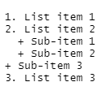
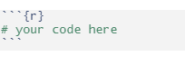
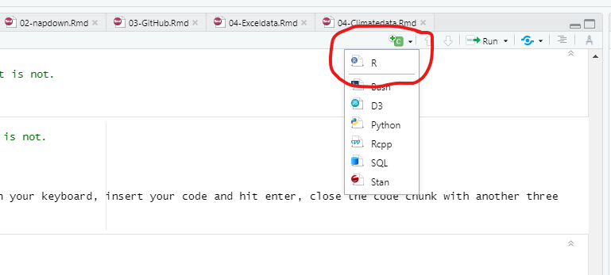

To create headers for your reports/document e.g. chapters, sub-chapters and so on; use the hash sign ‘#’ in front of the title. Sequentially increase the number of “#’ signs to denote subsequent header levels.
Insert blank line before each header (except in the beginning of document).
# Header level 1
## Header level 2
### Header level 3
#### Header level 4
Note: For the purpose of this example, I have added a space before each line so that r doesn’t create the headers. Remove the space to create the headers
To create emphasis in your markdown texts, use an asterisk before and after text to italicize or double asterisk to make your text bold.
Alternatively, you may use single underscore for italics or double underscore for bold.
Use numbers to order your list items. and a plus sign ‘+’ to create sub-items on your list. 
Use an asterisk ’*’ before list item to create an unordered list.
Use a plus ‘+’ sign for sub-items.
Use tab command or two spaces on your keyboard to indent the list items
unodered list
Use two or more spaces at the end of a line
to insert a line break
You may insert a link using the plain http address such as https://rmarkdown.rstudio.com/ or insert it as a linked phrase using square brackets and parenthesis such as in screenshot
linked phrase
to produce this:
To insert images to our document, we use the same syntax as links, but start with an exclamation mark’!’ before syntax.
For an image from a url use; 
or for an image file in your local directory use, .
For instance, I downloaded the UN Climate logo and saved it as a .jpg in my working directory as exact name unfccc_logo.jpg
The following syntax will insert the logo into my document:
insert image
UN Climate logo
When inserting images from local file, it is strongly recommended to have the image in your working directory.
To insert a block quote within your text, use the greater than sign ‘>’ in the beginning of quote. The quote must begin on a new line, and remember to insert blank line before and after. For instance the screenshot below;
block quote
produces this:
This exercise may seem complicated at first, but trust me, it is not.
You will agree with me sooner than later :)
To write your code use open code chunk with three backticks
and the curly brackets {insert your code language}, hit enter on your keyboard, insert your code and hit enter, close the code chunk with another three backticks.

Alternatively, you may do it from top right corner of your script/source window as shown below. Click on the green +c icon and select R from the drop down list.
 Code chunks for other languages may be added from this list as well.
Create table headers with dashed lines below the header title. Separate headers with tab or space between the headers and corresponding dashed lines.
Type in row values below the dashed lines. The row value length may exceed the dashed line length but MUST not extend into the next header’s dashed line.
Column alignment is based on the position of the header/column title relative to the dashed line below it.
To insert a caption or alt text to your table use, full colon ‘:’ followed by your caption text at the end of the table.
Alternatively, use ‘Table: your caption or text.’ The following syntax (screenshot) produces the ensuing table.
manual table
| Header 1 | Header 2 | Header 3 | Header 4 |
|---|---|---|---|
| 12343 | 895 | 0.5867891011 | 1 |
| Name | Rank | score | remark |
| Type | 3 | TRUE | 12.1 |
| Left align | Right align | Center | Default |
You may also create simple tables using a knitr function called kable.
The code below tells r that we want to create a data set with 3 columns, X, Y & Z, assigning them the values enclosed in the letter c. The letter c used together with brackets indicates a list of elements. Thus, in the example below, we tell r that our column X, will contain a list of 4 elements i.e 20, 30, 10 & 50.
Then we tell r to create the data set by combining all the columns X, Y & Z into a data frame.
Finally, we call the function kable and enter the data we created. This function converts or data frame into a table format.
Optionally, you may add a caption to the table and specify cell alignment.
kable table
| X | Y | Z |
|---|---|---|
| 20 | 1.4 | yes |
| 30 | 4.3 | no |
| 10 | 5.9 | true |
| 50 | 2.7 | false |
Note that our code chunk is labelled ‘kable.’ You can label code chunks as below
labled chunk
This will be useful for cross-referencing as we’ll see in the Chapter References section.
Use three or more asterisks or dashes to insert a page break.
page break
Remember to add a blank line before the asterisks or dashes
To create the desired output file document from the markdown format, use the function render ("your .rmd file name).
Alternatively,and most commonly used, is the Knit button from the markdown script environment. The button is a blue ball of yarn around a crotchet, and is labeled ‘Knit’
When a document is rendered, rmarkdown saves the results/output file into your working directory, giving it the same name as your .rmd file, but with relevant extension (e.g. as html if output type was set to html)
To add citations to our document, we need to add our reference document details to a text file saved in the .bib format e.g myrefences.bib. We also need to add this file to our bibliography parameter in the yaml section of the index.rmd file.
The references for this exercise are saved in the file ‘book.bib.’
To add your reference documents to the .bib file, use the BibTeX citation style i.e
citations
Sites such as Google Scholar have ready to use/ formatted bibliography styles such as BibTeX, EndNote etc. You may copy-paste the BibTeX text into your .bib file in r.
You may have as many documents listed in the .bib file but rmarkdown will only include those that have been referenced within your markdown document.
To reference documents in your narrative and thus, have them included in the reference section, use the format [@documentname].
The references will appear at the end of the chapter where they are referenced, as well as in the overall ‘References’ section.
To reference chapter, type in the chapter title inside square brackets. For instance, this command references our second chapter named NAPdown.
The same applies to section headers. Just type [section header name].
To reference figures use syntax ‘@ref(fig:code chunk label)’ or’@ref(tab:code chunk label)’ for tables. For instance, we created our kable table in the code chunk named kable. To reference this table anywhere in our document, just type in command
Ref table
This will insert a reference link to the kable table.
Pandoc is a universal document converter designed to convert thousands of markup languages. So when we create our document in markdown and want to output it as a pdf, pandoc does the work.
Knitr on the other hand, is an r package that enables the integration of yaml, text and code evaluations into an output document. Knitr contains the Knit function through which we render our rmarkdown documents to our desired output format.
When you render a document in rmarkdown (or call the knit function), the rmarkdown document is converted to a basic markdown language (.md) which is then converted by pandoc to say html, pdf, word, etc as per user specifications.
Knitr and pandoc come in bundled with rmarkdown, and thus, there is no need to install them separately.
However, should you need to install pandoc as standalone, you may do so from the Pandoc homepage. In this regard, it is important to note that in as much as standalone installations may provide much higher versions of the software than what is already bundled in r, they are often not streamlined for use in r, and may thus cause some compatibility issues.